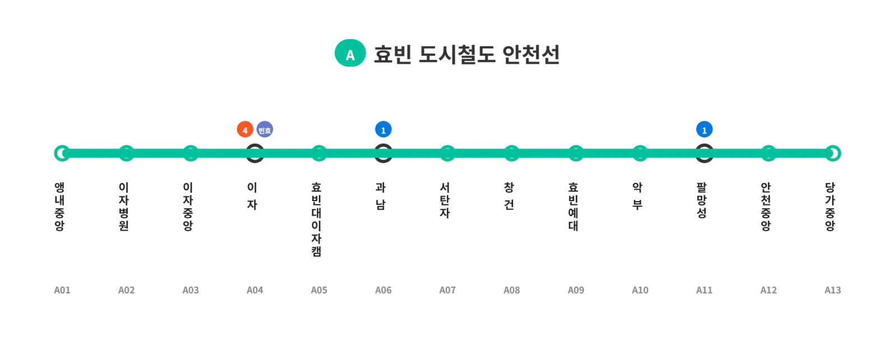

효빈도시철도 안천선
|
|||
|
 안천선 노선도
|
|||
| 노선 정보 | |||
|---|---|---|---|
| 노선 색상 | ■ 민트색 (Mint) (아이스그린 화이트) | ||
| 운영 기관 | 효빈교통공사[1] | ||
| 개통일 | 미정 (계획 중) | ||
| 기점 | 앵내중앙역 | ||
| 종점 | 당가중앙역 | ||
| 역 수 | 13개 | ||
| 거리 | 13.16km | ||
| 시스템 | 노면전차 + 지하철 혼용 (Tram-Train) | ||
| 차량 | A001호대 전동차 | ||
1. 개요
"지상(노면)과 지하를 하나로 넘나드는 안천과 탄성의 새로운 하이브리드 연결 고리"
효빈광역시 탄성군의 신도시 중심인 앵내중앙역과, 원도심의 자존심이자 심장인 안천구의 당가중앙역을 다이렉트로 연결하는 혁신적인 경전철 노선이다.
현재 계획 및 설계 단계에 있으며, 대한민국과 효빈시를 통틀어 최초로 도입되는 트램-트레인(Tram-Train) 시스템이 가장 큰 특징이다. 이 시스템은 넓은 신도시에서는 도로 위를 달리는 친환경 노면전차(트램)로 운행되다가, 길이 좁고 복잡한 구도심에 진입하면 그대로 지하 터널로 들어가 고속 지하철로 변신하는 마법 같은 하이브리드 운영 방식을 자랑한다.
2. 노선 특징 및 건설 배경
2.1. 하이브리드 방식 (노면 + 지하 혼용)
안천구의 극심한 교통난과 예산 문제를 동시에 해결하기 위해 고안된 '트램-트레인' 방식은 구간의 환경에 맞게 형태를 자유자재로 바꾼다.
- 지상 (트램) 구간 (앵내중앙역 ~ 효빈예대역): 대규모 신도시가 새롭게 조성된 탄성군 도변읍과 안천구 이자동 외곽 지역은 초기부터 도로 폭이 10~12차선으로 매우 넓게 설계되어 있다. 이 광활한 도로 중앙에 전용 차로를 깔아 건설비가 저렴하고 도시 미관에 훌륭한 노면전차(트램) 방식으로 건설된다. 승객들은 길을 건너다 버스 타듯 쉽게 전철에 오를 수 있다.
- 지하 (지하철) 구간 (악부역 ~ 당가중앙역): 반면 도로 폭이 비좁고 항상 주차장을 방불케 할 만큼 교통량이 포화 상태인 안천구의 구도심(악부, 안천, 당가동)은 지상으로 철도를 까는 것이 물리적으로 불가능했다. 따라서 효빈예대역을 지나면서 열차는 그대로 땅 밑 터널로 빨려 들어가, 구도심 구간에서는 기존 노선들과 동일한 고속 지하철로 운행된다.
2.2. 행정구역 연결 (안천구-탄성군)
신생 베드타운으로 폭발적으로 성장 중인 탄성군 도변읍(앵내리)의 신시가지와, 전통적인 상권과 행정 시설이 밀집한 안천구 구도심을 완벽하게 이어주는 광역 교통망의 성격을 띠고 있다. 안천선이 개통되면 탄성군 주민들은 지하철 환승 없이 다이렉트로 안천구의 핫플레이스인 이자공원이나 당가거리로 진입할 수 있게 된다.
3. 차량 (A001호대 전동차)
- 효빈도시철도 A001호대 전동차: 트램-트레인이라는 기괴하고도 혁신적인 노선에 투입되기 위해 특수 제작된 하이브리드 전동차다. 도로에서는 신호등을 지키며 저속(시야 운전)으로 부드럽게 주행하다가, 지하로 들어가면 신호보안장치(ATC/ATO)를 켜고 시속 80km 이상의 고속으로 질주하는 다재다능한 괴물이다. 또한, 낮은 인도에서 타는 지상 트램 승강장과 높은 지하철 승강장의 단차를 모두 극복하기 위해 접이식 발판(가변 스텝) 기술이 적용될 예정이다.
4. 역 목록


| 역번호 | 역명 | 한자 역명 | 거리 | 환승 노선 | 형태 | 소재지 |
|---|---|---|---|---|---|---|
| A01 | 앵내중앙 | 櫻内中央 | 0.0 | - | 지상 1층 (노면) | 효빈광역시 탄성군 |
| A02 | 이자병원 | 梨子病院 | 1.1 | - | 지상 1층 (노면) | 효빈광역시 안천구 |
| A03 | 이자중앙 | 梨子中央 | 1.85 | - | ||
| A04 | 이 자 | 梨 子 | 2.61 |
|
||
| A05 | 효빈대 이자캠퍼스 |
孝彬大 梨子캠퍼스 |
3.37 | - | ||
| A06 | 과 남 | 果 南 | 4.35 |
|
||
| A07 | 서탄자 | 西弾子 | 5.37 | - | ||
| A08 | 창 건 | 倉 健 | 6.35 | - | ||
| A09 | 효빈예대 | 孝彬藝大 | 7.55 | - | 지상/지하 절환 | 효빈광역시 탄성군 |
| A10 | 악 부 | 楽 府 | 9.66 | - | 지하 1층 | 효빈광역시 안천구 |
| A11 | 팔망성 | 八罔城 | 10.61 |
|
지하 2층 | |
| A12 | 안천중앙 | 安川中央 | 11.91 | - | ||
| A13 | 당가중앙 | 唐可中央 | 13.16 | - |
5. 역 상세
- 앵내중앙역 (A01): 안천선의 기점. 탄성군 도변읍 앵내리 신도시의 중심이자 주거 밀집 지역에 위치하여 출근 시간대 막대한 수요를 책임질 예정이다.
- 이자역 (A04): 안천선의 최고 핵심 환승 거점. 4호선 및 빈효선 광역전철과 환승되어 유동 인구가 가장 폭발적으로 많을 것으로 확정된 곳이다. 인근에 러브라이버들의 성지로 불리는 이자공원과 상권이 있다.
- 효빈예대역 (A09): 탄성군 도변읍 요우리에 위치한다. 트램 구간과 지하철 구간을 가르는 마의 지상/지하 절환 구간이 이 역 직후에 위치해 있다. 열차가 역을 출발하자마자 땅속 터널로 빨려 들어가는 롤러코스터 같은 진풍경을 볼 수 있다.
- 악부역 (A10) ~ 당가중앙역 (A13): 헬게이트로 악명 높은 안천구의 좁고 복잡한 구도심을 뚫고 지나가야 하므로 전 구간 쾌적한 지하 터널로 건설된다.
6. 여담 및 서브컬처 밈 (Meme)
6.1. 무민원의 기적 (지상 트램 구간 호평)
보통 도심 한가운데 도로 2차선을 잡아먹는 지상 철도(트램)를 깐다고 하면 상인들과 운전자들의 격렬한 님비(NIMBY) 민원이 빗발치지만, 안천선은 대한민국 철도 역사상 극히 예외적인 케이스로 꼽힌다.
- 안천선의 지상 구간(탄성군 신도시 ~ 안천구 이자동 외곽)은 초기 계획부터 왕복 10차선에 달할 만큼 도로 폭이 워낙 넉넉하게 확보된 지역이라, 중앙에 트램 전용 차로를 깔아도 일반 교통 흐름에 전혀 지장을 주지 않는다.
- 또한, 도입되는 A001호대 차량 역시 최첨단 저소음/저진동 기술이 집약된 모델이라 철도 소음 문제가 거의 제로에 가깝다. 덕분에 지역 주민들은 님비 현상은커녕, 오히려 "유럽처럼 세련된 트램이 동네를 지나가서 집값이 오르고 분위기가 산다"며 격하게 환영하는 기현상이 벌어지고 있다.
6.2. 와카나 시키 헌정 노선? (아이스그린 화이트의 전설)
"이과적 광기가 깃든 하이브리드 발명품 노선, 그리고 아이스그린 화이트."
안천구 일대는 이미 지명의 우연(이자동=사쿠라우치 리코, 타천동=요하네, 안천=이나미 안주 등) 덕분에 러브 라이브! 선샤인!! 팬덤의 절대적인 '아쿠아(Aqours) 영토'이자 성지로 군림하고 있다. 그런데 효빈시가 발표한 이 신규 노선, 안천선이 어째서인지 러브 라이브! 슈퍼스타!!의 Liella! 멤버인 와카나 시키(若菜 四季)와 엮이며 거대한 밈을 양산하고 있다.
- 미친 컬러 매칭: 안천선의 테마색으로 지정된 민트색(Mint, #B2FFDD)은 놀랍게도 와카나 시키의 공식 이미지 컬러인 '아이스그린 화이트'의 헥사코드와 완벽하게 100% 일치한다! 팬들은 이를 두고 "아쿠아의 성지인 안천구 한복판을 뚫고 지나가는 리엘라(시키)의 침공"이라며 열광하고 있다.
- 매드 사이언티스트의 발명품: 와카나 시키는 작중 과학 동아리 부장이자 정체불명의 발명품을 만들어내는 매드 사이언티스트 속성을 가지고 있다. 그런데 안천선에 투입되는 '지상 트램과 고속 지하철을 자유자재로 넘나드는 기괴하고 혁신적인 트램-트레인(Tram-Train)' 시스템 자체가 마치 시키가 발명해 낸 이과적 광기의 산물 같다는 찰떡같은 평가를 받는다.
- 당선동 사계복지재단 유니버스: 게다가 안천선이 지나가는 길목 인근(서구 당선동)에는 이름마저 완벽히 똑같은 '사계(四季)복지재단' 클러스터가 있어, '시키선(四季線)' 혹은 '발명품 노선'이라는 별명이 굳어지고 있다. 팬덤에서는 훗날 안천선이 개통되면 차내 모니터에 시키가 발명한 벌레 로봇이 튀어나오거나, 발차 멜로디로 시키의 솔로곡이 울려 퍼질 것이라는 밈 섞인 행복 회로를 맹렬하게 돌리고 있다.
7. 관련 문서
8. 각주
- 공식 명칭은 아직 확정되지 않았으나, 기존 효빈교통공사로 통폐합 운영될 확률이 높다. [이동]